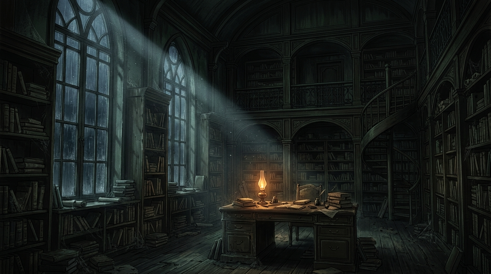
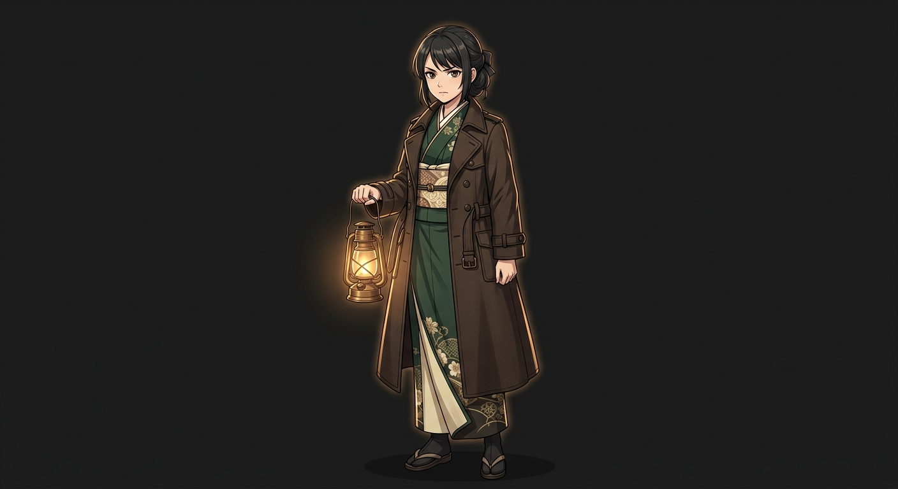
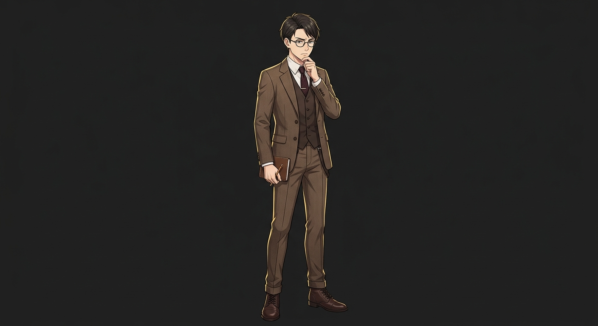

“如果日记里写的是真的，那么七年前沉入湖底的，恐怕不只是那辆车。”（把煤油灯举高，光在水面上摇晃。）
正在呈现
玩家舞台
第三夜 · 未开启的门
图书馆 · 一层
雨夜图书馆
雨声渐密，书页里藏着未说完的秘密。

远野 澪
白石 拓真
KP 旁白
你翻遍了手边的藏书目录，却什么都没找到。
目录最后一页，被人用指甲反复刻下同一行小字：不要开门。
转场
下一句，由你揭幕。
依次呈现角色发言，让故事按你的节奏展开。
我放下书，走到门边，把耳朵贴近那条细小的缝隙。
这里 SAN 检定怕是躲不过了……
此刻的故事，已全部呈现。新的角色发言会在这里等候。
故事之外的准备，也在手边。